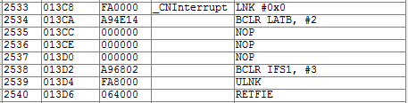
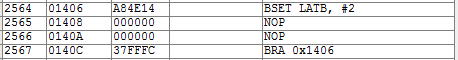

change_latency.c - measures ISR latency using a change notification interrupt¶
Measure latency using change notification. RB2 itself to generate an CN interrupt. Need to run this with a slow clock to avoid external loading effecting CN triggering point. Therefore, the macro
-DCLOCK_CONFIG=PRI_8MHzCrystal_4MHzFCY is defined to run the processor at 4 MHz. However, this means you must attach an external 8.0 MHz crystal for this to work. The image below shows the results of a scope capture on a dsPIC33E series processor, demonstrating a 9 us timing between rising edges, which is 36 Tcy (instruction) cycles. However, since this was measured using the bootloader, this includes an additional 2 cycles due to an additional goto instruction provided by the bootloader to jump to the remapped interrupt vector table.In addition, the high-speed baud rate (230,400 for all but PIC24F devices) doesn’t work in this mode. So, defining -DDEFAULT_BAURDRATE=19200 produces a usable baud rate.
#include "pic24_all.h"
Interrupt Service Routine for Change Notification. The compiles to the following 8 instructions (used xc-16 v. 1.11):
void _ISRFAST _CNInterrupt(void) {
Set output back to 0.
_LATB2 = 0;
Give the CN time to propagate so clearing the flag will actually clear it.
NOP();
NOP();
NOP();
Clear the interrupt.
_CNIF = 0;
}
int main(void) {
configBasic(HELLO_MSG);
Configure IO pins.
CONFIG_RB2_AS_DIG_OUTPUT();
_LATB2 = 0;
ENABLE_RB2_CN_INTERRUPT();
Configure Change Notification general interrupt.
_CNIF = 0; //Clear the interrupt flag
_CNIP = 2; //Choose a priority
_CNIE = 1; //enable the Change Notification general interrupt
This loop compiles to 4 instructions (using xc-16 v. 1.11):
 while (1) {
_LATB2 = 1; //trigger interrupt by bringing high
NOP(); //give the CN time to propagate
NOP();
}
}